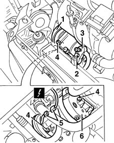
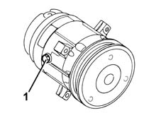
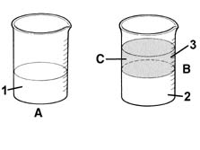
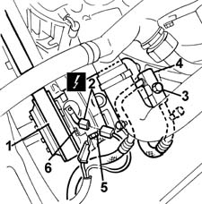
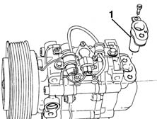

5040A20 air conditioner compressor - r+r - includes fluid level check and top up if necessary
- Path
- Procedures > 50 AUXILIARY UNITS > 5040 AIR CONDITIONING CASING AND COMPONENTS > 5040A air conditioner coolant circuit > 5040A20 air conditioner compressor - r+r - includes fluid level check and top up if necessary
- Kind
- repair procedure (removal / refitting; the operation number is the code)
- Applies to
- all engines; all production periods
- Interactive page
- https://sloeber94.github.io/elrnDB-fMltpl/en/#/2891806
Applies to: all engines; all production periods
Applies to: engines: 1.6 16v; all production periods
 Removing
Removing
 Refitting
RefittingDrain the coolant fluid (see op. 5040A10 Air conditioning refrigerant CIRCUIT - Draining and Refilling ).
Remove the right front wheel and wheel arch.
Loosen the air conditioning compressor drive belt.
1. Remove the drive belt from the compressor pulley.
2. Undo the bolt fixing the pipe connector.
3. Disconnect the pipe connector.
4. Undo the bolts fixing the compressor.
5. Disconnect the electrical connection for the compressor.
 | Name | Connector |
|---|---|---|
5 | Air conditioning compressor electro-magnet | L20 |
6. Remove the compressor.

Applies to: engines: 1.6 16v; all production periods
If replacing the compressor, proceed as follows.
1. Remove the plug for the compressor being replaced.
Drain the fluid from the compressor. If necessary, rotate the compressor several times, manually, to remove all the fluid.

Applies to: engines: 1.6 16v; all production periods
1. Recover the fluid drained from the compressor in a suitable transparent container (quantity A).
2. Drain and recover the fluid from the new compressor (quantity B) in an identical container, following the instructions given previously.
3. Introduce the same amount of fluid removed from the compressor being replaced into the new compressor (eliminate quantity C=B-A).

Applies to: engines: 1.6 16v; all production periods
Refitting
RemovingCheck that the compressor is not damaged.
Reposition the compressor.
Tighten the bolts fixing the compressor.
Connect the compressor pipe connector and tighten the fixing bolt.
 | Fastening | Component | Ø | Value (daNm) |
|---|---|---|---|---|
- | Bolt | Compressor pipe connector | M10 x 1.25 | 3.5 |
Connect the electrical connection for the compressor.
Fit the drive belt on the pulley.
- 1092D14 air conditioner compressor drive belt - adjust tension
Repressurize the coolant fluid (see op. 5040A10 Air conditioning refrigerant CIRCUIT - Draining and Refilling ).
Applies to: all engines; all production periods
Applies to: engines: 1.9 JTD 8V; all production periods
Removing
RefittingDrain the coolant fluid (see op. 5040A10 Air conditioning refrigerant CIRCUIT - Draining and Refilling ).
4450B10 Front WHEEL (one) - R.R.
7055B42 Additional FRONT WHEEL ARCH (one), left or right - R.R.
1092G10 single engine belt r r
1. Remove the drive belt from the compressor pulley.
2. Disconnect the electrical connection for the compressor.
| Name | Connector |
|---|---|---|
2 | Air conditioning compressor electro-magnet | L20 |
3. Undo the bolt fixing the pipe connector.
4. Disconnect the pipe connector.
5. Undo the compressor fixing bolts.
6. Remove the compressor.

Applies to: engines: 1.9 JTD 8V; all production periods
If replacing the compressor, proceed as follows.
1. Remove the oil separator for the compressor being replaced.
Drain the fluid contained in the compressor. If necessary, rotate the compressor several times, manually, to remove all the fluid.

Applies to: engines: 1.9 JTD 8V; all production periods
1. Recover the fluid drained from the compressor in a suitable transparent container (quantity A).
2. Drain and recover the fluid from the new compressor (quantity B) in an identical container, following the instructions given previously.
3. Introduce the same amount of fluid removed from the compressor being replaced into the new compressor (eliminate quantity C = B - A).
Applies to: engines: 1.9 JTD 8V; all production periods
Refitting
RemovingCheck that the compressor is not damaged.
Reposition the compressor.
Tighten the bolts fixing the compressor.
Connect the compressor pipe connector and tighten the fixing bolt.
| Fastening | Component | Ø | Value (daNm) |
|---|---|---|---|---|
- | Bolt | Compressor pipe connector | M10 x 1.25 | 3.5 |
Connect the electrical connection for the compressor.
Fit the drive belt on the pulley.
1092G10 single engine belt r r
7055B42 Additional FRONT WHEEL ARCH (one), left or right - R.R.
4450B10 Front WHEEL (one) - R.R.
Repressurize the coolant fluid (see op. 5040A10 Air conditioning refrigerant CIRCUIT - Draining and Refilling ).
Topics linked from this page (5)
- 1092G10 single engine belt r r
- 4450B10 Front WHEEL (one) - R.R.
- 5040A air conditioner coolant circuit
- 5040A10 Air conditioning refrigerant CIRCUIT - Draining and Refilling
- 7055B42 Additional FRONT WHEEL ARCH (one), left or right - R.R.